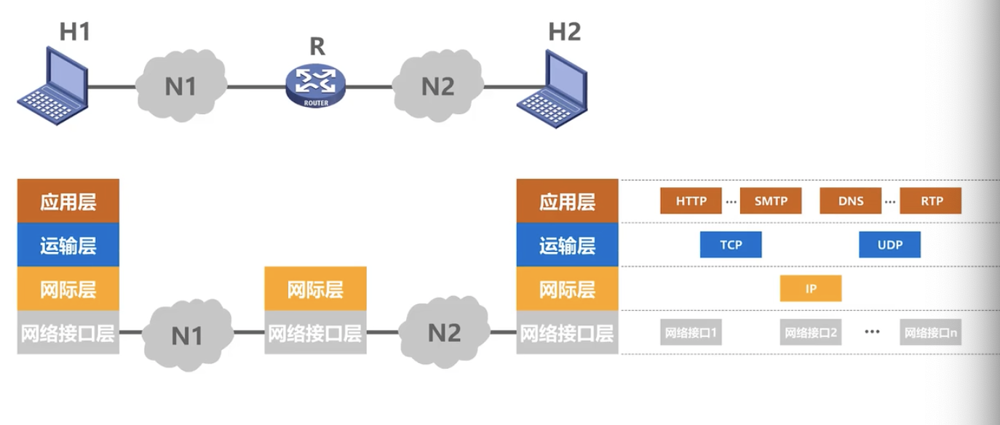
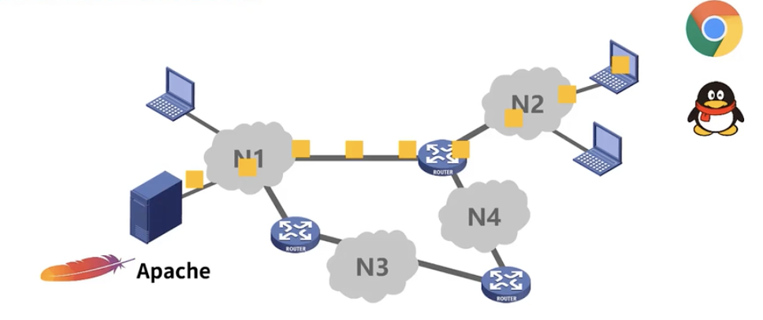

概述
- 因特网概述
- 三种交换
- 计算机网络的定义和分类
1.因特网概述
网络、互联网（互连网）和因特网
因特网发展的三个阶段
因特网的标准化工作
因特网的组成
1.网络（network）、互联网（互连网）（internet）和因特网（Internet）
- 网络由若干节点和连接这些结点的链路组成
-
多个网络还可以通过路由器互连起来，这样就构成了一个覆盖更大的网络，即互联网，因此，互联网是“网络的网络”
- 因特网是世界上最大的互连网络
设备通过链路跟节点连接形成：网络。
通过路由器在把网络中的节点连接起来构成：互联网
因特网相当于所有互联网的集合形成一个最大的互连网络
internet和Internet的区别
2.因特网发展的三个阶段
- 从单个网络ARPANET向互联网发展 --- 1969- 1983
- 逐步建成三级结构的因特网 --- 1985 - 1991
- 逐步形成了多层次ISP结构的因特网 --- 1993 - 1995
因特网服务提供者（Internet Service Provifer --- ISP）
- ISP是给普通用户提供接入因特网的提供者
- 中国三大ISP ： 中国移动，中国电信，中国联通
基于ISP的三层结构的因特网#
-
第一层ISP
-
第一层ISP也称为因特网的主干网，一般能覆盖国际性区域范围
- 拥有高速链路和交换设备
- 第一层ISP之间直接互联
-
第二层ISP
- 第二层ISP和一些大公司是第一层ISP的用户
-
通常具有区域性或国家性覆盖规模，与少数第一层ISP相连接
-
第三层ISP
- 第三层ISP又称为本地ISP
- 是第二层ISP的用户，值拥有本地范围的网络
- 校园网，企业网，家用网等都是本地ISP的用户
如果某个用户可以接入因特网，那么用户也可以成为ISP，需要做的就是买调制解调器和路由器，跟其他用户互联
3.因特网的标准化工作
-
因特网的标准化工作对因特网的发展起到了非常重要的作用
-
因特网在制定其标准上的一个很大的特点是面向公众
- 因特网所有RFC技术文档都可以在因特网下载
-
任何人都可以通过电子邮件发表对某个文档的意见或建议
-
因特网协会ISOC是一个国际性组织，它负责对因特网进行全面管理，以及在世界范围内促进其发展和使用
-
因特网体系结构委员会IAB，负责管理因特网有关协议的开发
-
因特网工程部IETF，负责研究中短期工程问题，主要针对协议的开发和标准
-
因特网研究部IRTF，从事理论方面的研究和开发一些需要长期考虑的问题
制定因特网的正是标准要经过的4个阶段
（1）因特网草案
（2）建议标准（从这个阶段开始成为RFC文档）
（3）草案标准
（4）因特网标准
4.因特网的组成
1.边缘部分
2.核心部分
-
由大量网络和连接这些网络的路由器组成。这部分是为边缘部分提供服务（提供联通性和分组交换）的
这里的核心部分就是，给上面的边缘部提供网络服务，让用户
在核心部分起特殊作用的是路由器，是一种专用计算机，，不是上述所说的主机，路由器任务是转发收到的分组
分组转发是网络核心部分最重要的功能
2.三种交换
电路交换
分组交换
报文交换
1.电路交换
电路交换实现了人们能够用手机或者座机打电话相互通讯
- 电话交换机接通电话线的方式称为电路交换
-
从通信资源的分配角度来看，交换就是按照某种方式动态的分配传输线路的资源；
-
电路交换的三个步骤：
- 建立连接（分配通信资源）
- 通话（一直占用通信资源）
- 释放连接（归还通信资源）
-
优点
-
第一，通信时延小。这是因为通讯线路为通信双方用户专用数据直达，因此通信时延很小，当连续传输大量数据时，这一优点非常明显。
-
第二，有序传输。这是因为通讯双方之间只有一条专用的通信线路，数据只在这一条线路上传送，因此不存在失序问题。
-
第三，没有冲突。不同的通信双方拥有不同的信道不会出现征用物理信道问题。
-
第四，适用范围广。电路交换机适用于传输模拟信号，也适用于传输数字信号。
- 第五，实用性强。这主要得益于其通信时延小的优点。
-
第六，控制简单。电路交换的结点交换机及其控制都比较简单。
缺点：
-
第一，建立连接时间长。电路交换的平均连接建立时间对计算机通信来说太长。
-
第二，线路独占使用效率低。电路交换一旦建立连接物理通路就会通信双方独占，即使通信线路空闲，也不能供其他用户使用，因而信道利用率很低。
-
第三，灵活性差。只要连接所建立的物理通路中的任何一点出现了故障，就必须重新拨号建立新的连接，这对十分紧急和重要的通讯是很不利的。
-
第四，难以规格化。电路交换时数据直达，不同类型、不同规格、不同速率的终端很难相互进行通信，也难以在通讯过程中进行差错控制。
2.分组交换
因为当用电路交换来传送计算机数据时，其线路的传输效率往往很低，所以出现了分组交换
分组交换特点
发送方式：
-
发送前：
-
发送中：
-
各分组通过路由器的存储转发和创建和动态维护转发表等一系列操作后最终到达接收端
-
接受后：
注意：
1.首部中包含目的地址，源地址等重要控制信息
2.假定分组在传输过程中没有出现差错，转发时也没有被丢弃
3.每一个分组在互联网中独立选择传输路径，不一定是相同路径
优点：
-
第一，无需建立连接。分组交换不需要为通信双方预先建立一条专用的通信线路，不存在建立人家的时延，用户可以随时发送分组。
-
第二，线路利用率高。通讯双方不是固定占用一条线路，而是在不同的时间分段部分占用物理线路，因而大大提高了通信线路的利用率。
-
第三，简化了存储管理。这是相对于报文交换而言的，因为分组的长度固定，相应的缓冲区的大小也固定，管理起来相对容易。
-
第四，加速传输。由于分组是逐个传输的，这就使得后一个分组的存储操作，与前一个分组的转发操作可以同时进行。
-
第五，减少出错概率和重发数据量。因为分组比报文小，因此知错概率必然减小，即便分组出错，也只需重传出错的分组，这比重传整个报文的数据量小很多，这样不仅提高了可靠性，也减少了传输时延。
缺点：
-
第一，引起了转发时延。这是因为报文在结点交换机上要经历存储转发的过程。
-
第二，需要传输额外的信息量。将原始报文分割成等长的数据块，每个数据块都要加上原地址、目的地址等控制信息，从而构成分组，因此使得传送的信息量增大了。
-
第三，当分组交换采用数据报服务时，可能会出现失序、丢失、或重复分组，分组到达目的节点时，需要重新还原成原始报文，比较麻烦。若分组交换采用虚电路服务，虽然没有分组失序问题，但有呼叫建立、数据传输和虚电路释放三个过程。
3.报文交换
在早期的电报通信就采用了基于存储转发原理的报文交换。
报文交换的时间延迟较长，从几分钟到几小时不等。所以现在很少人用报文交换了。
电路交换，分组交换，报文交换的对比
电路交换：
- 1.通信之前要建立连接，
-
2.连接建立好之后，就可以使用已建立好的连接进行数据传输，
-
3.数据传送结束后需要释放连接，归还之前建立连接所占用的资源
-
比特流直达终点：
-
就是建立连接后，中间的各节点交换机就是直通形式的，比特流可直达终点
报文交换：
- 1.可以随时发送报文，不需要事先建立连接；
- 2.整个报文传送到相邻节点交换机
-
3.全部存储下来后进行查表转发，转发到下一个结点交换机
-
报文-存储转发-报文：
- 整个报文在节点交换机上进行存储转发
-
因为不限制报文大小，节点交换机需要较大的缓存空间
分组交换
- 1.随时发送分组，不需要事先建立连接
-
2.构成原始报文的分组，依次在各个结点交换机上存储转发
- 3.各节点交换机在发送分组的同时，还缓存接受到的分组
-
分组-存储转发-分组：
- 分组在各节点交换机上进行存储转发
- 相比报文交换，减少了转发时延
3.计算机网络的定义和分类
计算机网络的定义
- 计算机网络的精确定义并未统一
-
计算机网络的最简单的定义是：一些互相连接的，自治的计算机的集合
-
互连：是指计算机之间可以通过有线或无线的方式进行数据通信
-
自治：是指独立的计算机，它由自己的硬件和软件，可以单独运行使用
- 集合：是指至少需要两台计算机
计算机网络的定义是按照不同发展阶段给出了不同的定义，这些定义也间接反映了当时网络技术发展的水平
计算机网络现阶段较好的定义
计算机网络主要是由一些通用的，可编程的硬件互连而成的，而这些硬件并非专门用来实现某一特定目的（例如：传送数据或视频信号）。这些可编程的硬件能够用来传送多种不同类型的数据，并能支持广泛的日益增长的应用
计算机网络的分类
按交换技术分类：
按网络的使用者分类：
-
公用网
-
按规定缴纳费用的人都可以使用的网络，也可称为公众网
-
专用网
按传输介质分类：
按网络的覆盖范围
-
广域网WAN
-
城域网MAN
-
局域网LAN
-
局限在较小的范围 1公里作用，通常采用高速通信线路
-
个域网PAN
-
范围很小，大约在10米左右，有时也称为无线个人局域网WPAN（类似手机热点）
按拓扑结构分类
4.计算机网络的性能指标与非性能指标
性能指标
从不同的方面来度量计算机网络的性能
1.速率
2.带宽
3.吞吐量
4.时延
5.时延带宽积
6.往返时间
7.利用率
8.丢包率
非性能指标
费用 --- 标准化
质量 --- 可靠性
管理和维护 --- 可扩展性和可升级性
1.速率
为了能更好的理解速率，首先要了解比特（bit）
- 香农1948年提出比特
- 信息的基本单位
- 计算机中的数据量单位
-
表示一个二进制数字，因此一个比特表示二进制数字中的1或0
速率
- 最重要的一个性能指标
- 指的是数据的传送速率，也称为数据率或比特率
-
单位：bit/s或kbit/s、Mbit/s、Gbit/s等 以10^3作为换算单位
2.带宽
-
指信号具有的频率成分范围，也可表示为信道的频带宽度（允许通过最高频率成分与最低频率成分之差）
- 单位是赫、千赫、兆赫、吉赫
- 带宽越大，bit越多
- 用来表示网络中某通道传送数据的能力
-
表示在单位时间内网络中的某信道所能通过的“最高数据率”
-
例如：计算机100Mbps接入网络，指的是计算机能以100Mbps速率向信道注入bit流
-
两种表示
-
频域
- 某个信号具有频带宽度
- 单位是赫
-
某信道允许通过的信号频带范围称为该信道的带宽
-
时域
-
网络中某通道传送数据的能力，表示在单位时间内网络中的某信道所能通过的“最高数据率”
- 单位就是数据率的单位 bit/s
3.吞吐量
-
表示在单位时间内通过某个网络（或信道、接口）的实际数据量。也就是说吞吐量用来测量实际上到底有多少数据量能够通过网络
-
受网络的带宽或网络的额定速率的限制
- 额定速率是绝对上限值
- 可能会远小于额定速率，甚至下降到零
- 有可能会用每秒传送的字节数。
4.时延
5.时延带宽积
- 时延带宽积=传播时延 x 带宽
- 链路的时延带宽积又称为比特为单位的链路长度
6.往返时间RTT
在很多情况下，因特网上的信息不仅仅单方向传输，而是双向交互；所以有时我们很需要知道双向交互一次所需的时间
-
表示从发送方发送完数据，到发送方收到来自接收方的确认总共经历的时间
7.利用率
-
信道利用率
-
用来表示某信道有百分之几的时间是被利用的（有数据通过）
-
网络利用率
根据排队论，当某信道的利用率增大时，改信道引起的时延也会迅速增加因此，信道利用率并非越高越好
也不能使信道利用率太低，这会使通信资源浪费，所以应该使用一些机制，可以根据情况动态调整输入到网络中的通信量，使网络利用率保持在一个合理的范围内
8.丢包率
-
丢包率即分组丢失率，是指在一定时间范围内，传输过程中丢失的分组数量与总分组数量的比率。
-
丢包率具体可分为接口丢包率、结点丢包率、链路丢包率、路径丢包率、网络丢包率等。
-
丢包率使网络运维人员非常关心的一个网络性能指标，但对于普通用户来说往往并不关心这个指标
-
分组丢失的两种情况：
- 分组在传输过程中出现误码，被结点丢弃
-
分组到达一台队列已满的分组交换机时被丢弃；在通信量较大时就可能造成网络拥塞
-
因此，丢包率反映了网络的拥塞情况：
- 无拥塞时路径丢包率为0
- 轻度拥塞时路径丢包率为1%～4%
- 严重拥塞时路径丢包率为5%～15%
5.计算机网络体系结构
- 常见的计算机网络体系结构
- 计算机网络体系结构分层的必要性
- 计算机网络体系结构中的专业术语
1.常见的计算机网络体系结构
（1）OSI体系结构
使各种计算机在世界范围内互连成网的标准框架 （“开放系统互连参考模型”）
OSI七层协议（从下往上）：
- 7.应用层
- 6.表示层
- 5.会话层
- 4.运输层
- 3.网络层
- 2.数据链路层
- 1.物理层
（法律上的国际标准）
（2）TCP/IP 体系结构
TCP/IP四层协议（从下往上）：
（事实上的国际标准）
（3）OSI失败的原因
- OSI的专家缺乏实际经验
- OSI的协议实现过分复杂，运行效率低
- OSI标准的制定周期太长
- OSI的层次划分不合理
每天有用户需要接入因特网的需求，这就要求用户的主机必须是TCP/IP协议族，而用于网络互联的路由器中也需要TCP/IP协议族，只是路由器只包含网络接口层和网际层

为了互连全世界各种不同的网络接口，网络接口层没有规定具体的内容。
例如：有线的以太网接口，无线局域网的WI-FI接口。所以本质上TCP/IP体系结构只有三层
- IP协议是TCP/IP协议结构网际层的核心协议
- TCP和UDP是TCP/IP体系结构运输层的两个重要协议
-
应用层包含了大量的应用层协议，例如：HTTP，SMTP，DNS， RTP等
分析：
-
IP协议可以将不同的网络接口进行互连，并向其上的TCP协议和UDP协议提供网络互连服务
-
TCP协议享受IP协议提供的网络互连服务的基础上，向应用层的相应协议提供给可靠传输的服务
-
UDP协议享受IP协议提供的网络互连服务的基础上，向应用层的相应协议提供给不可靠传输的服务
IP协议作为TCP/IP体系结构中的核心协议，一方面负责互联不同的网络接口，另一方面为各种网络应用提供服务
（4）原理体系结构
为了更好的去学计算机网络原理知识，综合OSI体系结构和TCP/IP体系结构的优点采用的五层协议的原理体系结构，
五层协议（从下往上）：
- 5.应用层
- 4.运输层
- 3.网络层
- 2.数据链路层
- 1.物理层
（适用于教学）
相当于把TCP/IP协议的网络接口层重新划分为物理层和数据链路层
2.计算机网络体系结构分层的必要性
因为计算机网络是个非常复杂的系统，所以早在ARPANET设计时就提出了分层的概念。
这里所谓的“分层”可将庞大而又复杂的问题，转化为若干较小的局部问题，而这些较小的局部问题旧比较易于研究和处理
为了表达出分层的必要性，我们采用五层协议的原理体系结构为例
(我们从下往上，从简单到复杂，层层处理面临的问题)
（1）物理层
例如我们用两台计算机用一条网线连接起来
那我们需要考虑的问题有：
- 采用怎样的传输媒体（介质）
- 采用怎样的物理接口连接传输媒体
- 使用怎样的信号表示比特0和1
把以上的问题解决了，那么两台计算机就可以传输信号了。
注意：
严格来说，传输媒体不属于物理层，因为它并不包含在体系结构中
那么我们把上面的问题统一划归到物理层去解决
（2）数据链路层
例如，我们把四个主机通过总线互连，构成一个总线型网络，
那我们需要考虑的问题有：
（假设已经解决物理层的问题，可以成功传输信号）
-
如何表示网络中的各主机（主机编制问题，例如MAC地址）
- 如何从信号所表示的一连串比特流中区分出地址和数据
- 如何协调各主机争用总线
注意：
这里的总线型网络已经被淘汰，现在都在使用由以太网交换机将多台主机互连形成的交换式以太网
那么我们把上面的问题统一划归到数据链路层去解决
（3）网络层
例如，我们把3个路由器，4个网络互连起来形成小型互联网，
那我们需要考虑的问题有：
-
如何表示各网络以及网络中的各主机（网络和主机共同编制的问题，例如IP地址）
- 路由器如何转发分组，如何进行路由选择
那么我们把上面的问题统一划归到数据链路层去解决
（4）运输层
例如，假设主机中运行着与网络通信相关的应用进程

那我们需要考虑的问题有：
- 如何解决进程之间基于网络通信的问题
- 出现传输错误，如何处理
那么我们把上面的问题统一划归到运输层去解决
（5）应用层
在运输层的基础上，制定各种应用层协议，并按协议标准编写相应的应用程序，通过应用进程间的交互来完成特定的网络应用
那么我们把上面的问题统一划归到应用层去解决
3.计算机网络体系结构中的专业术语
（1）实体
实体
对等实体
####（2） 协议
协议：
协议的三要素
注意：
这些逻辑通信不是真实存在，是为了方便研究体系结构某一层而假设的，所以不用考虑其他层
（3）服务
服务：
-
是在协议的控制下，两个对等实体间的逻辑通信使得本层能够向上一层提供服务
- 要实现本层协议，还需要使用下面一层所提供的服务
- 协议是“水平的”，服务室“垂直的”
-
实体看得见相邻下层所提供的服务，但并不知道实现该服务的具体协议。也就是说，下面的协议对上面的实体是“透明”的
服务访问点：
-
在同一系统中相邻两层的实体交换信息的逻辑接口，用于区分不同的服务类型。
- 数据链路层的服务访问点为帧的“类型字段”
- 网络层的服务访问点为IP数据报首部中的“协议字段”
- 运输层的服务访问点为“端口号”
-
服务原语
-
上层使用下层所提供的服务必须通过与下层交换一些命令，这些命令称为服务原语
-
协议数据单元PDU
-
服务数据单元SDU
-
同一系统内，层与层之间交换的数据包称为服务数据单元
-
多个SDU可以合成为一个PDU；一个SDU也可以划分为几个PDU